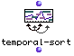
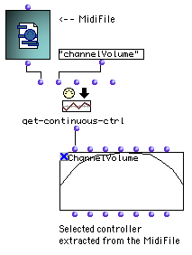

MIDI Containers
The MIDI containers are objects constituted of a set of simultaneous or sequencial MIDI events representing intermediate-level musical objects.
All these objects can be played and processed as musical object.
The list of MIDIEvents can be extracted (and possibly filtered) using get-MidiEvents.
MIDI Events Sequences : EventMidi-seq
The EventMidi-seq object represents a sequence of MIDI events. Its slots are lists of the corresponding MidiEvent slots (types, dates, tracks, ports, channels, fields).
It can store all types of MidiEvents (notes, controllers, etc..) and in this way can be compared to a buffered version of the MidiFile object. The main difference is that EventMidi-seq is a not written on hard disk as a file, so it can be manipulated more easily.
EventMidi-seq will be usefull for temporary storage of filtered or processed MIDI data.
An EventMidi-seq can be constructed by setting its input slots or from a list of MidiEvents, hence from the result of get-MidiEvents applyed to an object.
An equivalent "shortcut" procedure, except if MIDIEvents are to be filtered, is to connect the objects directly to the first (<self>) slot of the EventMIDI-seq.
In this example, MidiEvents are extracted from a MidiFile, and then filtered to separateand process channels. The resulting sequences are put in a new EventMidi-seq with a midi-mix-console object to add the initial settings events to the sequence.

Note : Using the function create-midiseq, a list of MIDI events or an object is simply converted into EventMidi-seq, but the second (optional) input allows to set a name to the newly created sequence. This name will appear in the EventMidi-seq's miniview.
Events are normally automatically time-sorted in each EventMidi-seq conversion. However, manually created sequences can be sorted using the temporal-sort method. |  |
All OpenMusic score objects can be converted into MIDI sequences. Notes,a s well as tempo, measure markers for voice and poly objects, are converted in MIDI events. This conversion may allow special treatments (such as filters with get-midievents method, etc.) and operations on MidiEvents.
The function separate-channels processes all Events of the EventMidi-seq and put each channel on a diferent track. In the following example, we separate notes of different channels in a chord-seq into diferent multi-seq tracks via MidiEvents processing. |  |

MIDI Controllers : MIDIControl / MIDI-Mix-Console
MIDI Controllers send messages changing the state of one or several MIDI Channels. There exist two main MIDI Controller containers in OM.
MidiControl is a special case of Midi Sequence representing a single MIDI continuous controller evolution. Such controller can be PitchBend, or any kind of Control Change. It contains a single event type, a single channel, port and track, and a list of dates and values. MidiControl is actually a sub-class of BPF controlling a given MIDI parameter. |  |
A List of controllers is proposed as an input menu for the first input (controller type) of the MidiControl box.
Channel, port an track can be numbers or lists : In this case the same continuous controller (dates/values) applies to all the channels/ports/tracks of the lists.
Dates/values can be edited with the BPF editor.
The following example shows a Channel Volume controller in a maquette.
Most of the controllers are classical MIDI ControlChange controllers for which values must be given in 0 – 127 range (7 bits).
(For On/Off switch controllers, value < 64 means "off", and value >= 64 means "on".)
Some of them (controllers 0 to 31) have a corresponding "Fine" controller (32 to 63) for which values must be set in 0 – 16384 range (14 bits).
The PitchBend controller is value range is –64 to 63, and –8182 to 8191 for "fine" pitchbend (also called pitchwheel).
A MidiControl object can be extracted from Midifile or EventMidi-seq using the get-continuous-ctrl method. |  Channel volume controller extracted from a MidiFile |
The MidiControl dates-values BPF can be resampled using OM-SAMPLE method. This function create a new control BPF with a regular given sample rate.
MIDI-Mix-Console represents a set of simultaneous MIDI Events set at once to a given port. It can be set manually thanks to a multi-channel mixing console interface and used as MIDI setup storage for playback or creation of MIDI objects. |  |
Tempo and Metrics
Tempo-Map allows the separation of tempo and metric information for works on quantification and analysis. It contains a list of tempo changes (date , tempo), and a list of measure markers (date, MIDI time signature). |  |
Tempo-Map can be extracted from any type of musical or MIDI containers (provided it contains tempo or metric information : MidiFile, EventMidi-seq, Voice, Poly, Measure) using get-tempomap method. |  |
It can be processed like other MIDI objects (conversions, get-midievents,...)
With Tempo-Map, Chord-seq to Voice conversion can be improved via the cseq+tempo->voice method. The tempo and measure informations will be used to quantify chords.
In this example, notes and tempo map are extracted from a MIDIFile (could be from a voice, for example). Notes are processed as chord-seq and then re-written in a voice using the initial tempo and metric informations. However, tempo information is used with some limits :
|  |